около 1 000 м² вместе с кафе
K189 Business & Medical Center
Многофункциональный коммерческий комплекс.
1 000 м²комплекс с кафе
20 сотоксобственный участок
3 этажафункциональные уровни
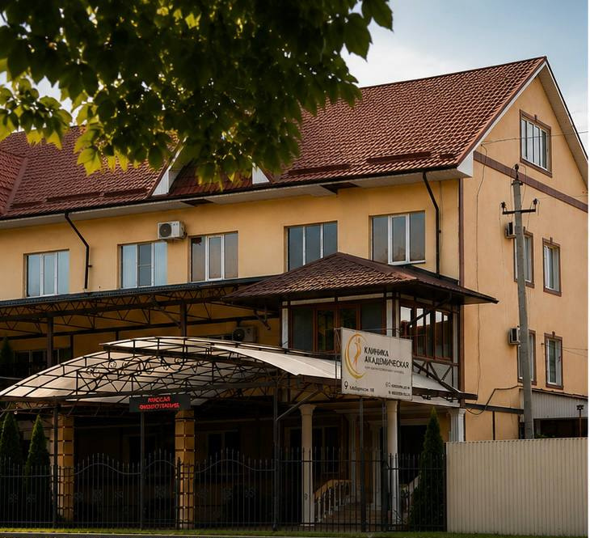
Комплекс в одном предложении
K189 Business & Medical Center — отдельно стоящий многофункциональный комплекс на Кабардинской, 189.
Медицинская инфраструктура, офисные пространства и гостиничный потенциал объединены в одном объекте. Существующая отделка позволяет сосредоточиться на адаптации проекта, а не на создании базы с нуля.
Площадь указана в округленном маркетинговом формате и включает кафе.
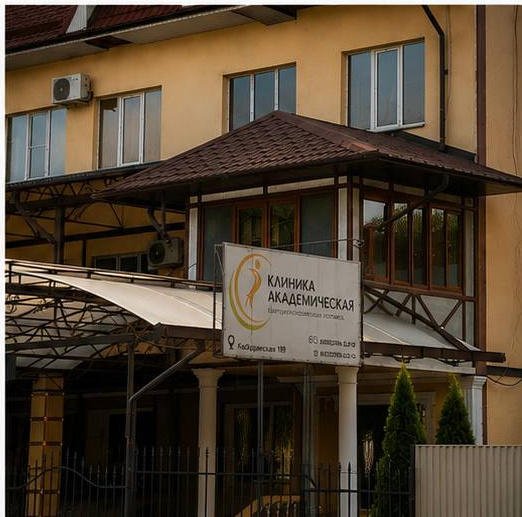
Что получает покупатель
Единый имущественный комплекс для нового оператора или инвестора.
20 соток огороженной территории
кафе, медицинское оборудование и инженерная база
Кафе, оборудование и технические характеристики указаны по данным собственницы; состав закрепляется документами сделки.
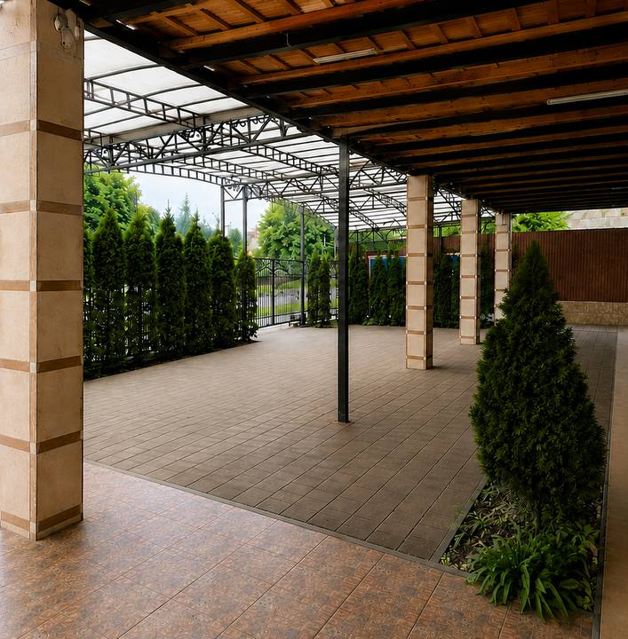
Не коробка, а готовая база
Ухоженные интерьеры, функциональное зонирование и профильная инфраструктура сокращают путь от покупки к запуску проекта.
Покупатель приобретает подготовленную основу для бизнеса.
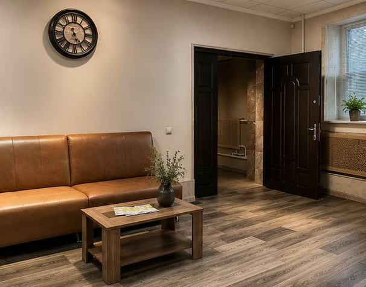
Интерьер не требует старта с нуля
Спокойная нейтральная отделка коммерческого уровня подходит для большинства сценариев и может заметно сократить объем первичных работ.
Готовый коммерческий комплекс без необходимости начинать с капитального ремонта.
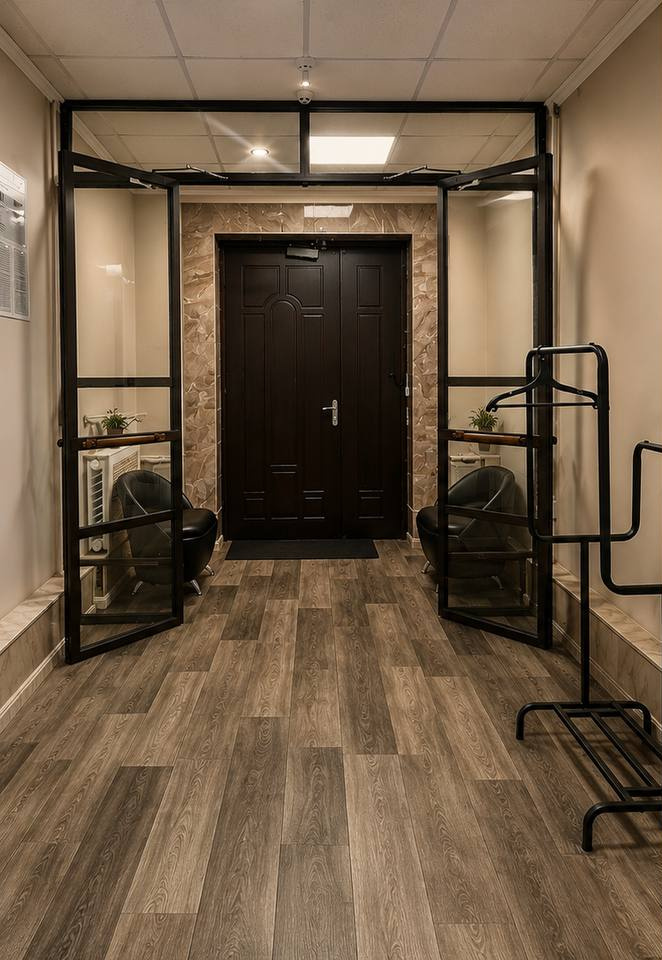
Три этажа — три роли
клиника и восстановительная медицина
офисы и управление
гостевой / гостиничный формат
кафе около 125 м²
Площадь кафе указана по данным собственницы.
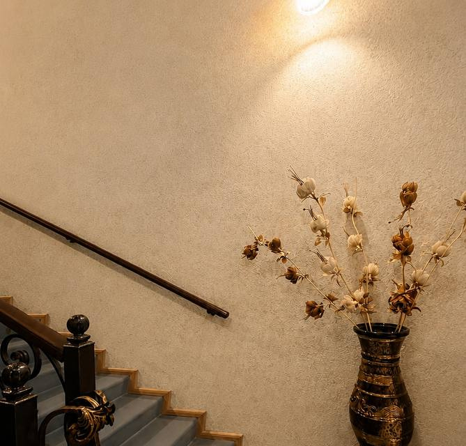
Физиотерапия — ключевой медицинский актив
Зал с реабилитационным оборудованием занимает центральное место в медицинской функции объекта.
Оборудование входит в предложение по данным собственницы; состав подтверждается перечнем имущества.


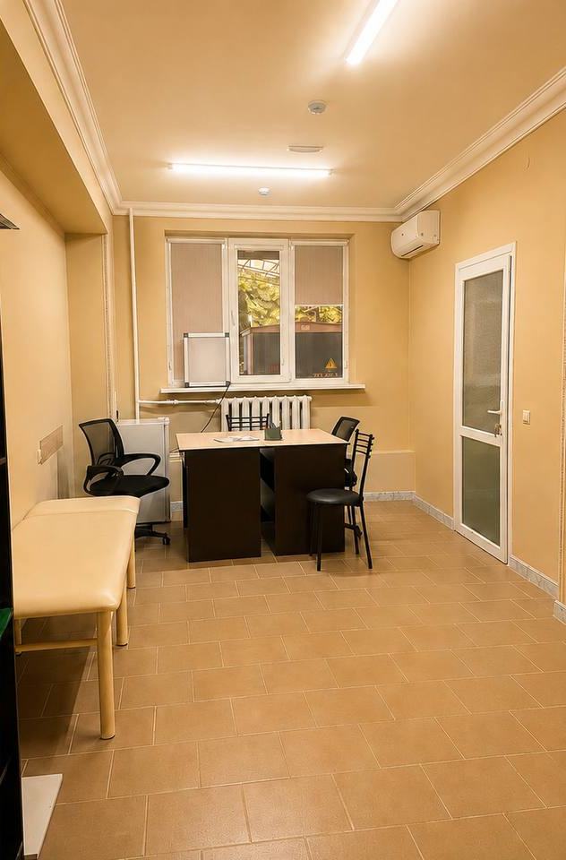
Коридор задает профессиональный уровень
Отдельные кабинеты, спокойная гамма и износостойкие покрытия формируют аккуратный маршрут пациента.
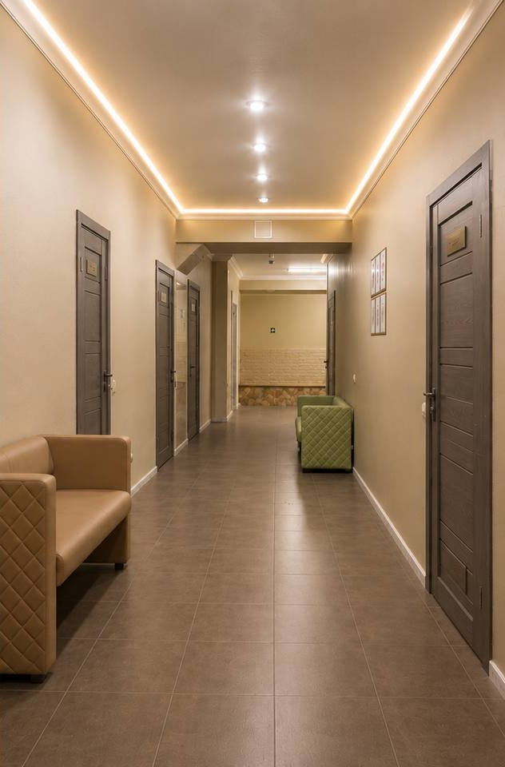
Офисы готовы к работе
Кабинетная планировка, естественное освещение и готовая отделка поддерживают административную, корпоративную или сервисную функцию.
Пространство можно адаптировать под команду без капитальной перестройки.
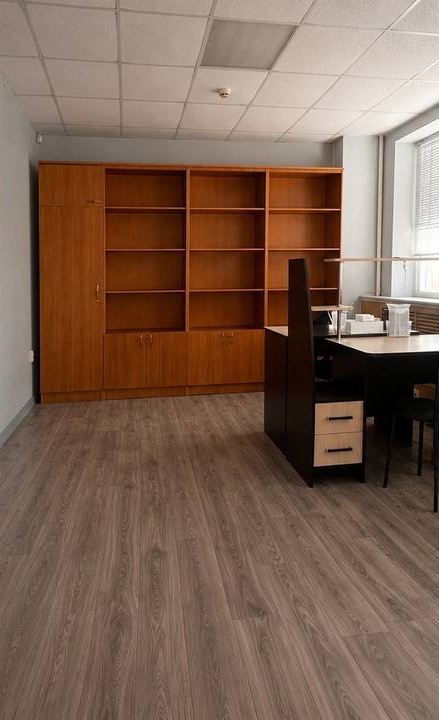
Гостевой номер уже оформлен
Комната и общий коридор уже имеют теплый гостиничный характер.
Конкретная модель эксплуатации зависит от требований будущего оператора и разрешительной документации.
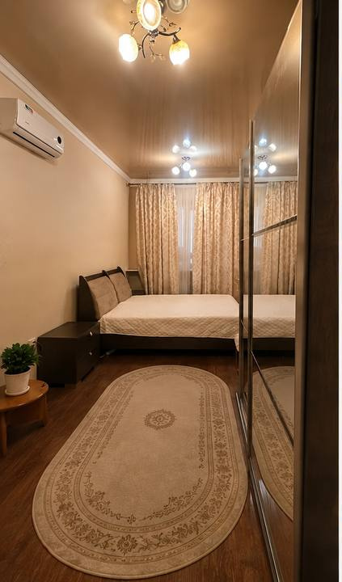
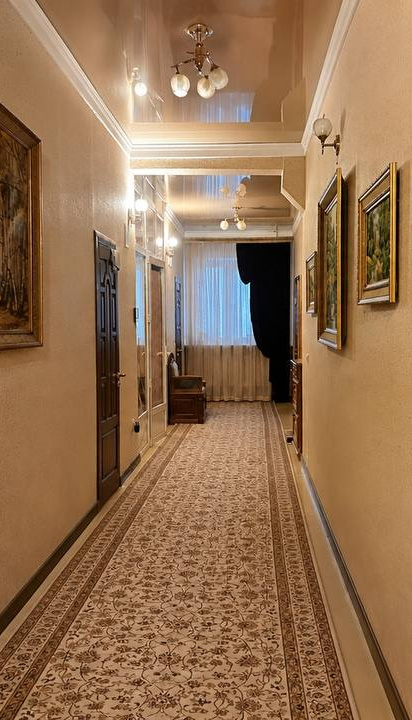
20 соток собственной земли
Огороженный участок, подъезд и просторная крытая входная зона формируют автономный городской объект.
Парковка на территории и вдоль улицы — по данным собственницы.
База для ежедневной эксплуатации
подстанция, 380 В, генератор
центральные сети, запас воды, газ
вентиляция и сплит-системы
оптоволоконный интернет
пожарные системы и выходы
видеонаблюдение
Технические характеристики указаны по данным собственницы и подтверждаются технической документацией.
Один объект — семь концепций
Концепция зависит от требований оператора и разрешительной документации.
Кабардинская, 189 — деловой адрес
Комплекс расположен в сформированном городском окружении. По информации собственницы, рядом находятся Сбербанк, МФЦ, подразделения полиции, административные учреждения и коммерческие объекты.
Состав окружающей инфраструктуры указан по информации собственницы.
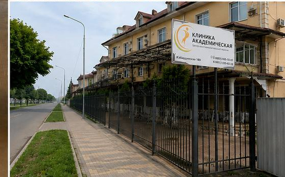
Гибкость — ключевой аргумент
Ценность K189 — в сочетании готовой базы и свободы нового сценария.
вместо стартовой реконструкции
по этажам и направлениям
единый оператор или несколько пользователей
земля, кафе, оборудование и инфраструктура
K189 готов к знакомству
Запросите полный инвестиционный меморандум, пакет документов и согласуйте просмотр объекта.
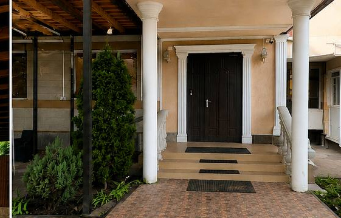